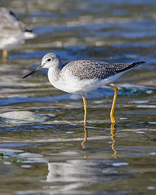
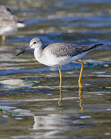

| Greater Yellowlegs | |
|---|---|
|  | |
| Conservation status | |
| Binomial name | |
| Tringa melanoleuca (Gmelin, 1789) |
|
| Synonyms | |
|
Totanus melanoleucus |
| Greater Yellowlegs | |
|---|---|
|  | |
| Conservation status | |
| Binomial name | |
| Tringa melanoleuca (Gmelin, 1789) |
|
| Synonyms | |
|
Totanus melanoleucus |
The Greater Yellowlegs, Tringa melanoleuca, is a large North American shorebird, similar in appearance to the smaller Lesser Yellowlegs. Its closest relative, however, is the Greenshank, which together with the Spotted Redshank form a close-knit group. Among them, these three species show all the basic leg and foot colors found in the shanks, demonstrating that this character is paraphyletic (Pereira & Baker, 2005). They are also the largest shanks apart from the Willet, which is altogether more robustly built. The Greater Yellowlegs and the Greenshank share a coarse, dark, and fairly crisp breast pattern as well as much black on the shoulders and back in breeding plumage.
Adults have long yellow legs and a long, thin, dark bill which has a slight upward curve and is longer in length than the head. The body is grey brown on top and white underneath; the neck and breast are streaked with dark brown. The rump is white. It ranges in length from 29 to 40 cm (11.5-16 inches) and in weight from 111 to 250 grams (3.9 to 9 oz).
Their breeding habitat is bogs and marshes in the boreal forest region of Canada and Alaska. They nest on the ground, usually in well-hidden locations near water. The three to four eggs average 50 mm (2 inches) in length, 33 mm (1.3 inches) in breadth and weigh about 28 grams (1 oz). The incubation period is 23 days. The young leave the nest within 24 hours of hatching and then leave vicinity of the nest within 2 days.
They migrate to the Atlantic and Pacific coasts of the United States and south to South America. They are very rare vagrants to western Europe.
These birds forage in shallow water, sometimes using their bill to stir up the water. They mainly eat insects and small fish, as well as crustaceans and marine worms. It often walks in sand or mud and leaves clear tracks; it can be possible to gather information about this species using its tracks.
The call is harsher than that of the Lesser Yellowlegs.

{kind=link}
{kind=link}